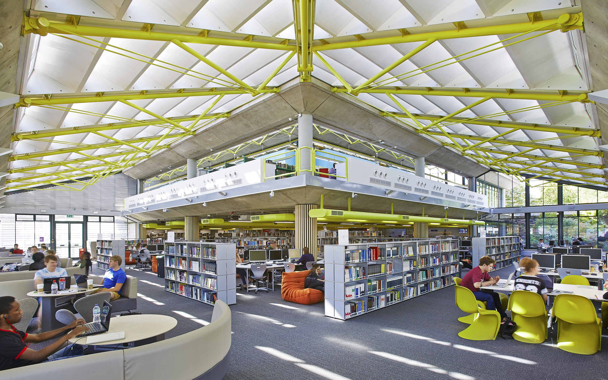

About LitReads Library
Welcome to LitReads Library, your gateway to a world of knowledge and imagination. We, at LitReads Library, are dedicated to fostering a love for reading, learning, and exploration. As the premier web-based library management system of the esteemed Australian University, we take pride in providing students, faculty, and all avid readers with seamless access to an extensive collection of books that span various languages, genres, and authors.
Diverse Collection
Our library boasts a diverse collection of books, carefully curated to cater to the intellectual curiosity of our university community. Whether you're delving into classic literature, exploring cutting-edge research, or seeking inspiration from contemporary works, LitReads Library has something for everyone. From English and French to Mandarin and Russian, our multi-lingual collection reflects the global nature of education and knowledge.
Our Mission
At LitReads Library, our mission is to empower individuals with the tools for academic excellence, personal growth, and entertainment through the power of literature. We believe in the transformative potential of books to shape minds, broaden horizons, and ignite passions.
Professional Aesthetics
The aesthetics of our platform reflect the modern web application standards. We have meticulously designed LitReads Library with a clean and professional look that resonates with the ambiance of a contemporary library. Navigating our platform feels like walking through the aisles of a well-organized physical library, but with the convenience of digital technology.